Austin Heat Fitness Wearable Lies 2026
My fitness tracker said I burned 4,200 calories yesterday. I was so proud. I posted a screenshot in my group chat. My friend Sarah, who actually knows...
Self-experiments, data deep-dives, and the occasional rant about wellness culture. All from a guy in East Austin with too many spreadsheets and a dog who doesn't care about his BMI.
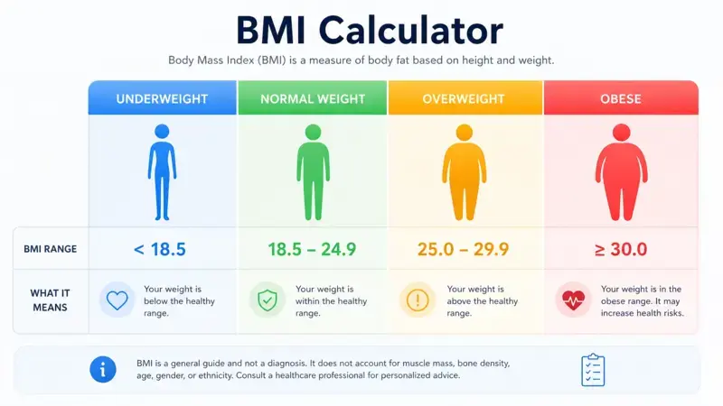
My fitness tracker said I burned 4,200 calories yesterday. I was so proud. I posted a screenshot in my group chat. My friend Sarah, who actually knows...
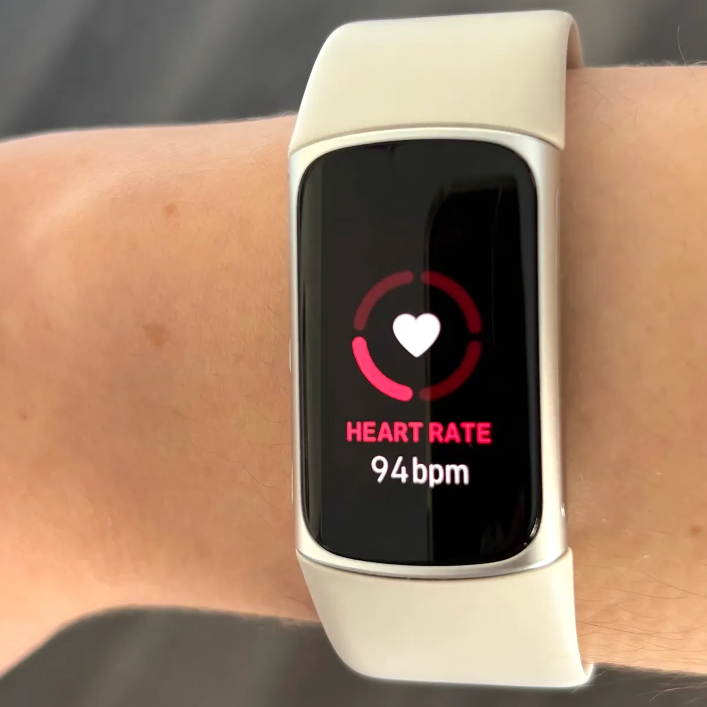
My Fitness Watch Said I Was 'Overreaching' During Austin's Hottest Week. It Was Wrong. James "Jamie" Whitfield I was halfway through my Tuesday mornin...
The scale in my bathroom is a liar. Not the digital kind of lie where you shift your weight to the left and shave off two pounds. I mean the deep, str...
My Fitness Tracker Said I Burned 4,200 Calories. My Spreadsheet Said 2,890. The Truth Was Messier. 4,200. That's what my fitness watch told me I burne...

The Week I Ate Nothing But Food Truck Tacos — Here's What the Data Said I had a theory. A stupid theory, but a theory nonetheless. I call it the "Aust...
I spent two months digging through GLP-1 alternatives. Repurposed generics, supplements, and lifestyle interventions.
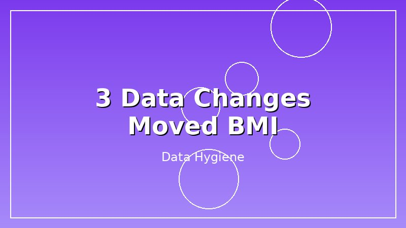
Three data hygiene fixes that moved my BMI from 26.8 to 25.9. No diet changes, no exercise fads. Just better data.
I bought 20 plant-based products from H-E-B and compared them to animal-based equivalents. The sodium was shocking.

Your fitness tracker lies above 95°F. Here's how I adjust training and data for Austin summers.
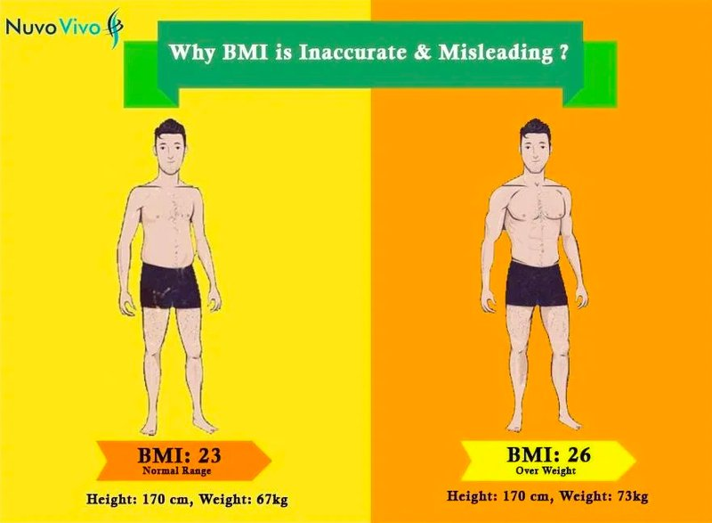
I've seen patients celebrate 'normal' BMIs while their metabolic panels told a completely different story. Here's what most calculators get wrong.
Meal prep did not work for me. So I built an algorithm instead. It is not pretty, but it works better than Sunday batch cooking.
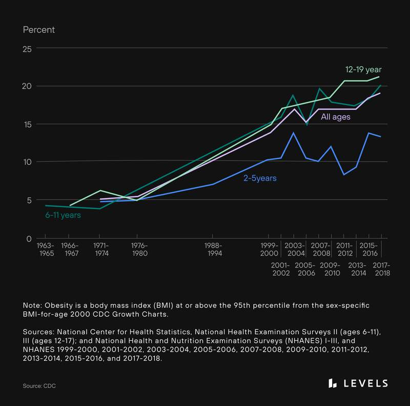
After reviewing over 12,000 patient records, one pattern is clear: BMI tells you almost nothing about metabolic health without context.
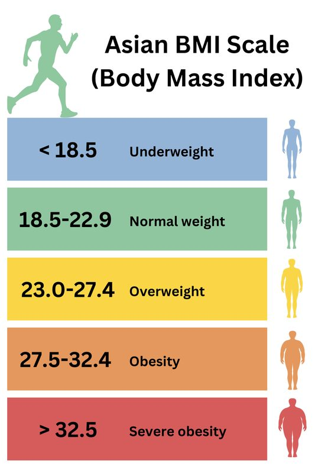
My mother has a BMI of 23.4. In American medicine, that's 'normal.' In reality, she's pre-diabetic with elevated triglycerides. Here's why.
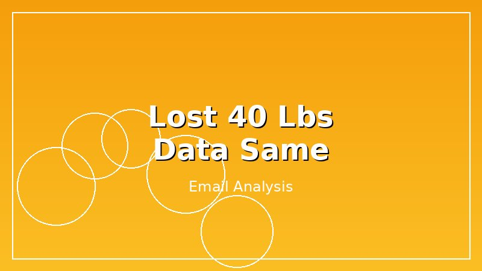
The email I get every week: someone lost weight but their BMI barely moved. Here is why that happens.
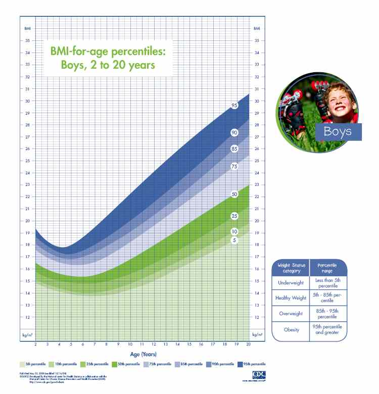
A parent recently told me their 8-year-old was 'obese' because an adult BMI calculator said so. The child was in the 85th percentile — overweight, not...
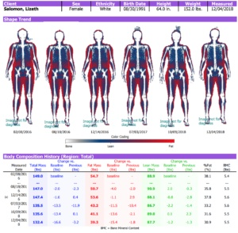
Body fat percentage is more accurate than BMI. But it's also harder to measure accurately, more expensive, and not always more clinically useful. Here...

I brought a spreadsheet to Canyon Ranch Austin. The data was fascinating, the experience was mixed, the cost was absurd.
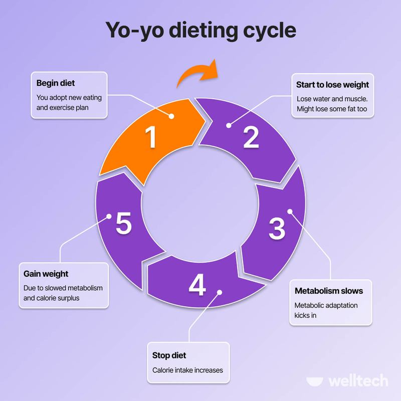
I've watched hundreds of patients lose 20, 30, 50 pounds. And I've watched most of them gain it back. The metabolic adaptation that follows weight los...
Another BMI post. I know. But I actually ran the numbers this time. NHANES data, DEXA correlations, and a lot of spreadsheets.
I've had patients with 'normal' BMIs but 40-inch waists. Their metabolic panels looked like disaster zones. Here's why waist measurement is non-negoti...
For years, I gave patients a number. 'Your ideal weight is 165 pounds.' Then I watched them obsess, fail, and feel like failures. I don't do that anym...
The new Texas nutrition license law is coming. I crunched the numbers. It is a mess, but it is a mess with a spreadsheet.
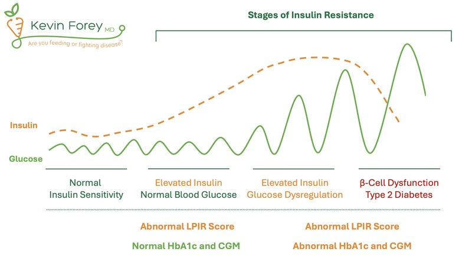
I have patients who weigh 200 pounds and are metabolically healthier than patients who weigh 150. Here's what actually determines metabolic health.

I ate only H-E-B prepared meals for 30 days and tracked everything. The sodium numbers were shocking.
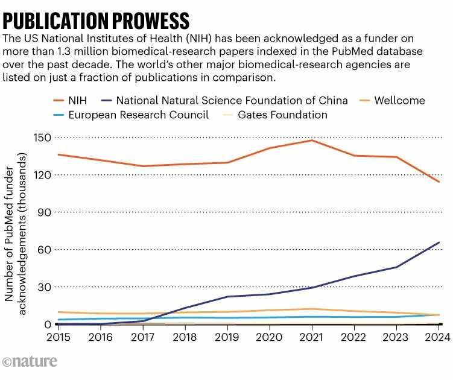
During my time at NIH NIDDK, I worked on a cohort study that followed 5,000 patients for 10 years. The findings challenged everything I learned in med...
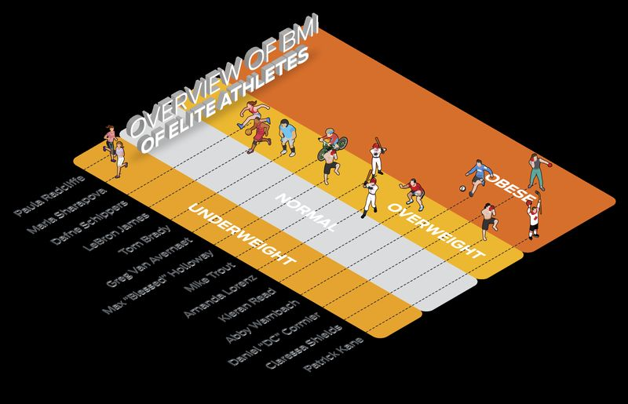
A college football player came to my clinic with a BMI of 32. His coach was panicking about 'obesity.' His body fat was 8%. Here's why BMI is meaningl...
After 15 years, I've developed a specific protocol for using BMI without falling into its traps. Here's exactly what I do during a new patient visit.
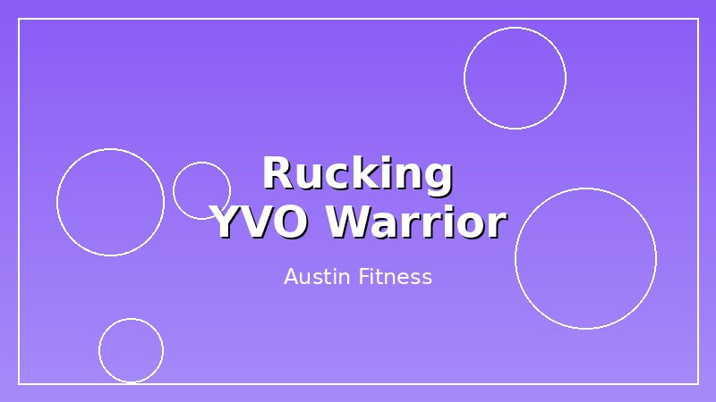
Walking with 20 pounds on the Butler Trail. Heart rate data, body composition changes, and why BMI barely budged.
BMI is a 200-year-old tool. In 10 years, we'll look back and wonder why we ever used it. Here's what's replacing it — and what's not ready yet.
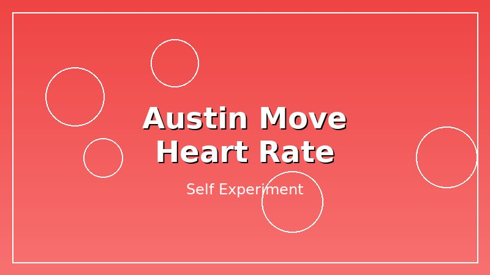
Moving from Denver to Austin changed my resting heart rate. I have the data, the graph, and some theories.
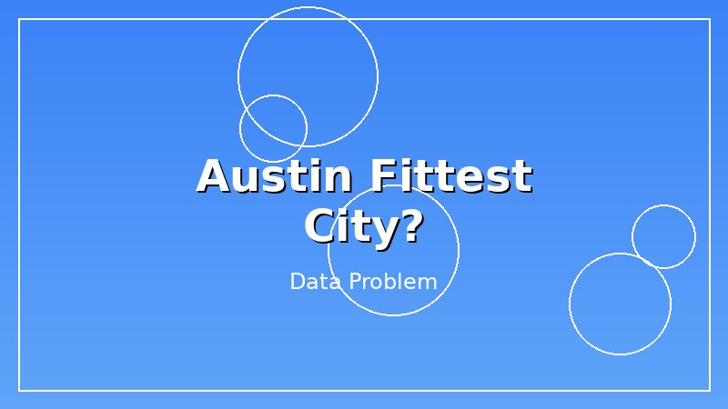
Austin keeps showing up on 'fittest city' lists. As a data guy who lives here, I have some questions about those rankings.
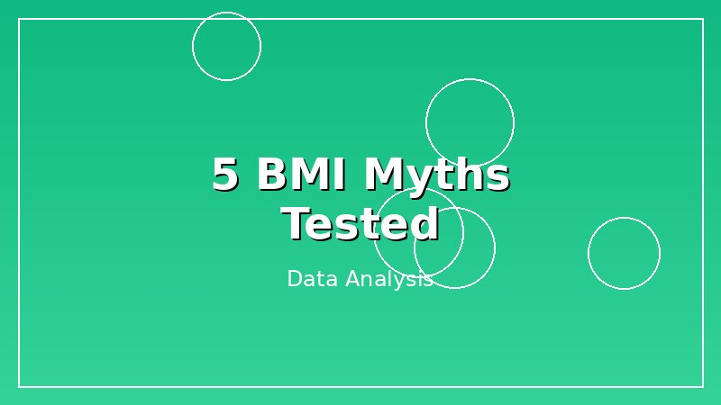
I tested 5 popular BMI myths with real data. Only 2 were true. NHANES data, DEXA correlations, and a lot of spreadsheets.
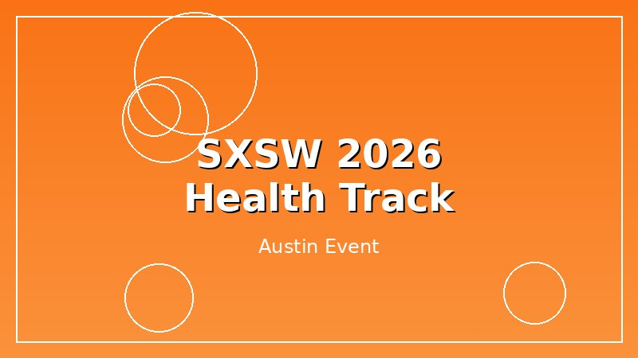
SXSW 2026 had a health track. I went. It was weird. Here is what happened when a data guy went to a wellness conference.

I tracked my BMI for 90 days straight. Here is the spreadsheet. Daily weigh-ins, moving averages, and the lying nature of daily numbers.